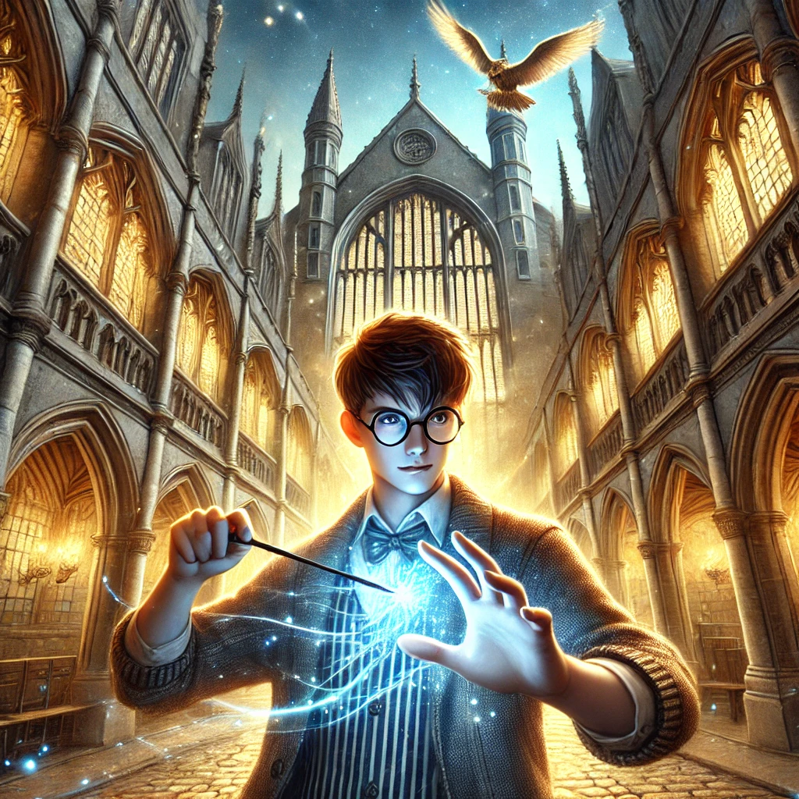

harrypotter
목차
작가
J. K. Rowling
출판일
1997년
감상평에 대한 AI그림
짜임새있는 스토리와 빈틈없는 설정으로 판타지에 관심이 없었거나 판타지를 싫어하는 사람도 한 번 읽어볼까라는 생각이 들게 만드는 책이다. 스토리가 진행이 되면서 주인공의 출생의 비밀이 나오고 그와 관련된 다양한 이갸기들 역시 흥미를 유발하는 요소이며 또 악역으로 보였던 인물이 사실을 사람들을 위해 뒤에서 최선을 다하고 있었다는 사실이 작품 후반부에 등장하여 독자들에게 절대악으로 생각되었던 사람이 사실은 절대선 모두를 위해 희생한 영웅이라는 반전있는 스토리가 이 책을 읽는 독자들에게 악이 무엇인지 다시한 번 생각하게 만들어준다

감상평에 대한 AI평가
이 감상평은 다음의 감정을 중심으로 구성되어 있습니다
✨ 예상치 못한 흥미로움 – 판타지를 좋아하지 않던 사람조차도 몰입하게 만드는 짜임새 있는 스토리와 설정 덕분에, 처음엔 가볍게 보려 했다가 점점 빠져드는 놀라움을 경험하게 된다.
✨ 긴장과 감동 – 주인공의 출생의 비밀이 밝혀지면서 스토리는 더욱 흥미진진해지고, 다양한 이야기들이 얽히며 감정의 기복을 만든다. 특히, 악역이라고 믿었던 인물이 사실은 희생적인 영웅이었다는 반전은 강한 여운을 남긴다.
✨ 선과 악에 대한 깊은 고민 – 절대악이라 여겼던 존재가 사실 모두를 위해 희생한 인물이었음을 알게 되는 순간, 독자는 선과 악의 경계를 다시 생각하게 된다. 이 과정에서 감정적으로 혼란을 느끼면서도 깊은 감동을 받게 된다.